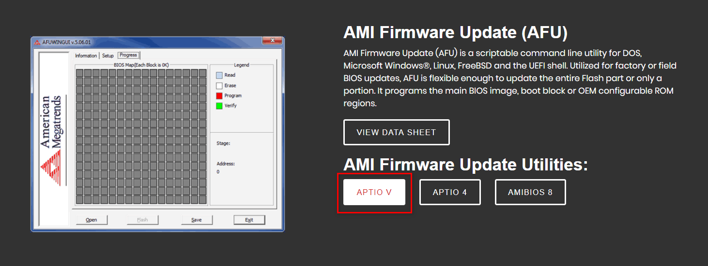
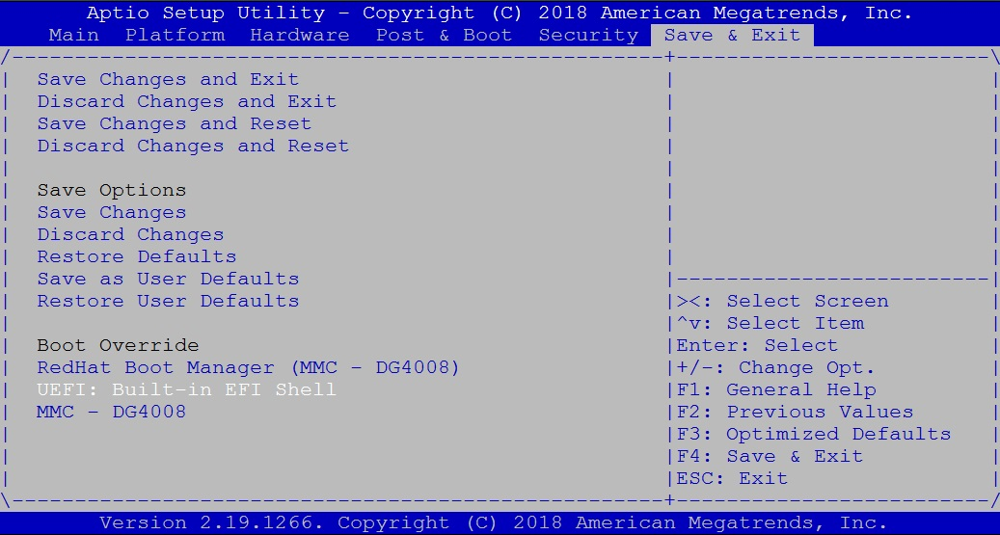

Getting Started¶
Download¶
it is available on GitHub and extract it after download
git clone https://github.com/ADLINK/bios-utility.git
Features of BIOS Modification Tool¶
1. Rename Entries¶
Allow you to renew the name for each node or entries
Go to
File>opento load ROM file
{kind=link}
Once loaded successfully, All of entries will be shown.
{kind=link}
For example, modify the name from “North Bridge” to “NB”
{kind=link}
After modification, any changes will be highlight and log, then save as new ROM file.

2. Change Visibility¶
Allow you to hide / show any entries
Select any entry on the left side and change its visibility. For example, to hide “Bluetooth Sideband”.
{kind=link}
After modification, any changes will be highlight and log, then save as new ROM file.
{kind=link}
3. Set Default Values¶
Allow you to configure the values for each entries
Select any entry on the left side and choose the valuse as the default on the right droplist.
{kind=link}
After modification, any changes will be highlight and log, then save as new ROM file.
{kind=link}
4. Change DMI Information¶
Allow you to modify DMI data, such BIOS information, System information or to add OEM strings
Go to DMI Table and double click which one you would like to configure. For example, “Baseboard or Module Information”:
{kind=link}
{kind=link}
{kind=link}
{kind=link}
{kind=link}
{kind=link}
How to Flash BIOS¶
It needs using AMI flash utility to upgrade BIOS, plese refer to the following steps:
Download AMI Firmware Update utilities from https://ami.com/en/products/firmware-tools-and-utilities/bios-uefi-utilities/
Please download AMI Firmware Update utilities - “Aptio V”

{kind=link}
Plesse copy AMI Firmware Update utilities “AfuEfix64.efi” & modified BIOS to USB drive.
Please enter BIOS muen and choose “UEFI: Built-in EFI Shell” in Override” to go into BIOS Shell mode.

{kind=link}
5. Please enter the following commands to look for the files on USB drive:
Shell> fs1:
FS1:\> ls
10/15/2018 17:31 555,632 AfuEfix64.efi
10/15/2019 17:30 16,777,216 1012VC0SS60E110.ROM
2 File(s) 17,332,848 bytes
Note
you can see the location of USB drive after enter Shell module, ex: fs0 ~ fs3
{kind=link}
6. Please enter following command to flash until the utility shows “Process completed”
FS1:> AfuEfix64.efi 1012VC0SS60E110.ROM /p /b /n /r
{kind=link}